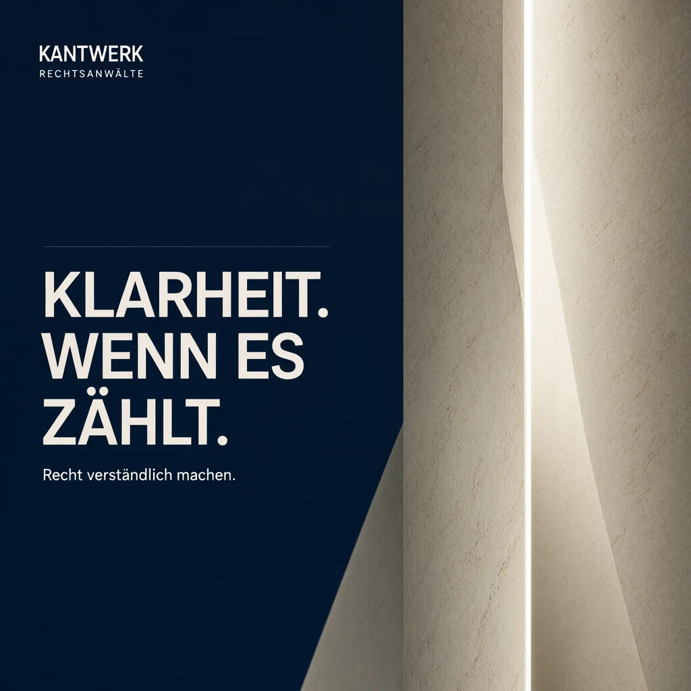
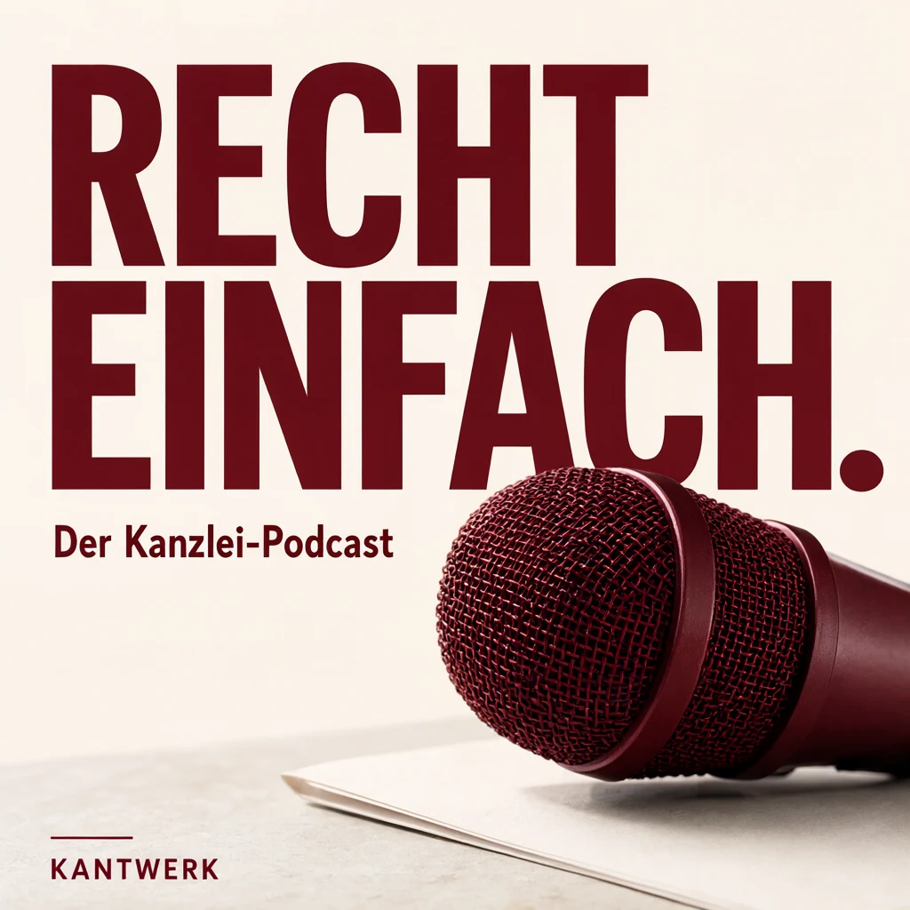
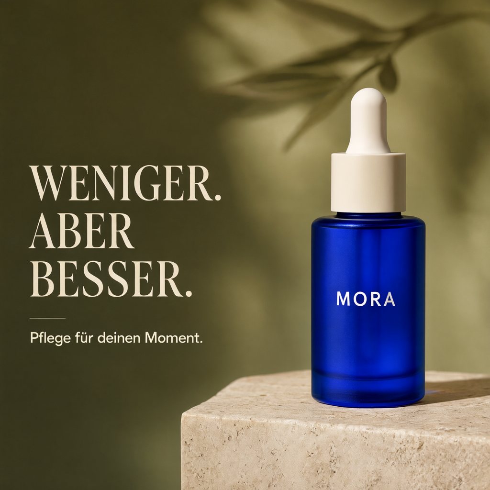
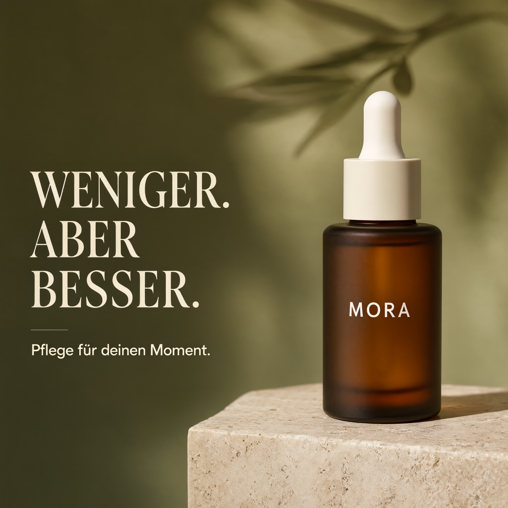

LOCAL IMAGE GENERATION · PORTFOLIO
Eine Idee.
Ein Prompt.
Ein neues Bild.
Kanzlei-Auftritte, Recruiting-Motive und Kampagnen für IT und KI. Konkrete Marketing-Ideen, generiert mit Qwen auf eigenem Rechner.


Auf lokaler Hardware erstellt
Text → BildReferenz → BearbeitungPrompts & Originaldateien01 / DIE ANWENDUNG
Deine Bilder. Ein Arbeitsbereich.
Beschreibe eine Idee, ergänze bei Bedarf Referenzbilder und bereite deine Bildaufträge vor. Local ImageGen UI bündelt die Arbeit mit dem Modell in einer lokalen Oberfläche.

Oberflächenaufnahmen mit vorbereiteten BF16-Beispielen. Der Ausgabeordner ist anonymisiert.
-
Idee beschreiben
Schreibe, was entstehen soll: etwa ein Poster, eine Produktanzeige oder ein Social-Media-Motiv. Bildaufträge speichern Prompt und Einstellungen.
-
Referenzen ergänzen
Optional bis zu zehn Bilder hinzufügen. Zum Beispiel eine Produktfarbe ändern oder ein Model mit einem Kleidungsstück aus einer zweiten Referenz kombinieren.
-
Ausgabe festlegen
Ordner und Dateinamen wählen, dann ein Bildformat einstellen. Weitere Optionen wie Seed und Exportgröße stehen unter den erweiterten Einstellungen.
-
Generieren & ansehen
Mit geladenem Modell starten. Mehrere Aufträge laufen nacheinander; Vorschau, Fortschritt und Abbruch bleiben in derselben Oberfläche.
Auf eigenem Rechner starten.
Projekt herunterladen und start.bat öffnen. Beim
ersten Start wird die Umgebung vorbereitet und standardmäßig Q4
heruntergeladen. Über Modell-waehlen.bat lässt sich
das Modell wechseln.
Windows, Python 3.11 und eine NVIDIA-GPU werden benötigt. Die Ersteinrichtung braucht Internet; die vollständige Anleitung steht in der README des Projekts.
02 / TEXT ZU BILD
Aus Worten wird Gestaltung.
Fiktive Kampagnen für Kanzleien, IT und KI — ergänzt um weitere Designbeispiele. Die Schrift ist Teil des generierten Bildes.
Eigenständige Portfolio-Konzepte. Die gezeigten Marken und Kampagnen sind fiktiv; es handelt sich um keine Kundenaufträge.
03 / EDITING MIT REFERENZEN
Aus Referenzen wird Neues.
Produktfarbe ändern, Outfit kombinieren oder ein Wandbild ersetzen. Die Ausgangsbilder dienen als Referenz.


Produktfarbe ändern
DER AUFTRAG
Regler ziehen oder mit den Pfeiltasten bedienen. Referenzen anklicken, um sie vollständig anzusehen.
VERWENDETE MODELLE
Modelle auf Hugging Face.
Die gezeigten Ergebnisse wurden mit dem Originalmodell in BF16 erzeugt. Die kompaktere Q4-Version findest du ebenfalls auf Hugging Face.